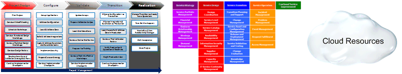

OUM - CLOUD |
|
|
|---|

The CAS OUM (Cloud Application Services OUM) Solution Delivery Guide provides an overview of the approach, phases and tasks that define the Cloud Application Services OUM (CAS OUM) approach. The information in this guide enables project managers, and project team members, to better understand the full scope of Cloud Application Services implementations, and to plan and execute those engagements.
This view provides access to all the life cycle phases and processes associated with Information Technology (IT) service management. IT service management refers to the entire set of activities, directed by policies, organized and structured in processes and supporting procedures – that are performed by an organization or part of an organization to plan, deliver, operate and control IT services offered to customers. The Operate View is aligned with the Information Technology Infrastructure Library (ITIL®), and describes the services provided by Oracle Managed Cloud Services (OMCS), as well as other organizations involved in providing managed services to Oracle customers. ITIL® is a registered trade mark of AXELOS Limited. All rights reserved.

Copyright © 2006, 2016, Oracle and/or its affiliates. All rights reserved.